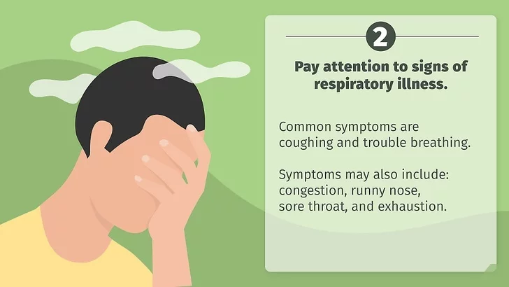
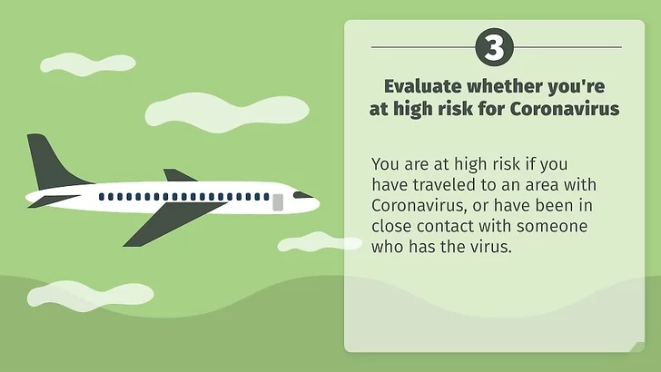
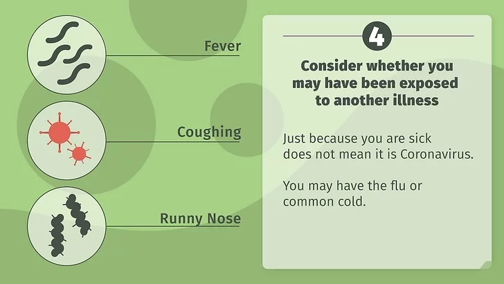

Connaitre les symptômes pour subir le test
source : Wikihow
Posté le 28 Mars 2020

1 Détectez la fièvre en surveillant votre température. La majorité des personnes porteuses du COVID-19 ont eu de la fièvre. Leur température corporelle a dépassé la valeur de 37 °C, qui est considérée comme normale. Il se peut que la vôtre soit légèrement supérieure ou inférieure à cette valeur. La manière de procéder à une mesure précise consiste à utiliser un thermomètre médical. Cependant, il est possible aussi de détecter une élévation anormale de la température corporelle en observant des symptômes tels qu’une transpiration anormale, des frissons, une faiblesse plus ou moins importante, des douleurs musculaires ou une déshydratation .
- Si vous êtes adulte et si votre température atteint ou dépasse 39 °C, allez chez votre médecin immédiatement. La consultation peut aussi être faite à distance. Dans ce cas, il s'agit d’une téléconsultation.
- Les nourrissons de moins de 3 mois, dont la température corporelle atteint 38 °C ou plus, doivent être présentés à un médecin de toute urgence. Il en est de même pour les enfants âgés de 6 à 24 mois si leur température est égale ou supérieure à 39 °C.
- Pour ceux dont l’âge est au-delà de 2 ans, il est important de demander l’interventi

2
Faites attention aux maladies respiratoires. La toux et les difficultés respiratoires font partie des symptômes les plus courants du coronavirus. D’autres signes peuvent se déclarer comme le mal de gorge, la congestion nasale, l’écoulement nasal ou la fatigue. Toutefois, sachez que ces symptômes peuvent résulter d’autres affections. Donc, si vous avez l’un d’eux, gardez votre calme. Le seul moyen de confirmation du diagnostic consiste à faire un test biologique par prélèvement dans les voies nasales ou respiratoires .
Le saviez-vous ? Environ 80 % des cas de coronavirus (COVID-19) ne sont pas suffisamment dangereux pour faire l’objet d’un traitement médical particulier. Mais, les personnes âgées courent des risques plus élevés de tomber gravement malades si elles souffrent d’une maladie grave, comme un trouble cardiaque, de diabète ou de l'hypertension .

Évaluez vos risques. Actuellement, en France, l’épidémie est au 2e stade [7]. Le virus est présent sur le territoire et forme des foyers d’infections ou clusteurs. Hormis ces foyers, les risques de contracter la maladie restent relativement faibles si vous n’avez pas séjourné dans une zone infectée ou si vous n’avez pas été en contact avec une personne malade ou diagnostiquée positive. Toutefois, si vous répondez à l’un de ces critères, vous êtes indemne à condition de ne pas développer de symptômes de la maladie au bout de 14 jours [8]. Actuellement (15 mars 2020), les pays touchés sévèrement par le COVID-19 sont la Chine, l’Iran, l’Italie, le Japon et la Corée du Sud.

4 Vérifiez qu’il ne s’agit pas d’une autre maladie. Le fait d’être malade ne signifie pas nécessairement que vous êtes infecté(e) par le coronavirus. Si votre région n’est pas touchée et si vous n’avez pas voyagé récemment, il est très possible que vous ayez une simple grippe ou un rhume. Si par exemple l’un de vos collègues a eu une grippe, il y a des chances que vous ayez contracté cette grippe plutôt que la maladie causée par le COVID-19.
5 Adressez-vous à votre médecin. Vous devrez le faire si vous avez de la fièvre et des difficultés respiratoires, et que vous pensez que vous avez été exposé(e) au coronavirus. Vous pouvez demander aussi une téléconsultation. Cette formule vous permet de faire l’examen en restant chez vous. Sinon, avant l’examen, avertissez votre médecin pour lui permettre de se préparer à vous recevoir et de prendre les mesures nécessaires pour éviter une contagion éventuelle. Il pourra aussi vous donner des instructions sur la marche à suivre [9]. Votre médecin ne fera pas le test diagnostique lui-même, mais il vous dirigera vers un établissement de santé habilité qui vous prendra en charge. Cet établissement fera un prélèvement qui sera transmis à un laboratoire spécialisé pour analyse.